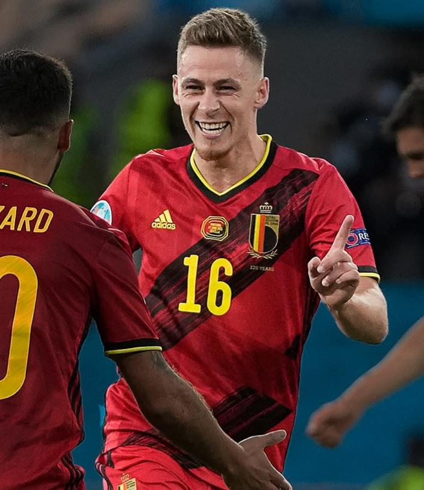

In dieser Bar genießen Sie erstklassige Küche mit warmen und köstlichen Gerichten, die für Sportfans jeden Alters und jeder Vorliebe geeignet sind. Hier werden reichhaltige, köstliche Mahlzeiten in einer stilvollen, sportlichen Atmosphäre serviert, die einem das Gefühl gibt, in einem der besten Stadien der Welt zu sein.
Wenn Sie also auf der Suche nach den allerersten, angesagtesten und besten Orten sind, um in Belgien Sport zu schauen, ist die Sportbar Hot Shots der perfekte Ort für Sie. Gemütliche Atmosphäre, leckere Speisen und Getränke sowie Übertragungen der besten Sportevents – hier finden Sie alles, was Sie für eine tolle Zeit mit Freunden oder der Familie brauchen.
Hier können Sie die Atmosphäre sportlicher Wettkämpfe genießen.
Die belgische Nationalmannschaft ist eine Mannschaft, die im wahrsten Sinne des Wortes die Worte „allererst“, „heiß“ und „vom Besten“ verkörpert. Diese Fußballmannschaft wurde für ihr herausragendes Spiel, ihre hohen Leistungen und ihre Professionalität berühmt.
Die belgische Nationalmannschaft belegt den allerersten Platz in der FIFA-Weltrangliste, was ihren Status als eine der besten Mannschaften im modernen Fußball bestätigt. Ihr Spiel ist voller heißer Momente, individueller Fähigkeiten und Teamplay, die den Fans während des gesamten Spiels den Atem anhalten werden.
Belgische Spieler sind nicht nur talentiert und geschickt, sondern repräsentieren auch die höchste Klasse des Spiels. Sie spielen regelmäßig für die besten Vereine der Welt wie Real Madrid, Manchester City und Liverpool und zeigen beeindruckende Ergebnisse bei internationalen Turnieren.

Füllen Sie das Formular aus und buchen Sie jetzt Ihren Platz!
 Deutschland2:3Belgien28 März
Deutschland2:3Belgien28 März